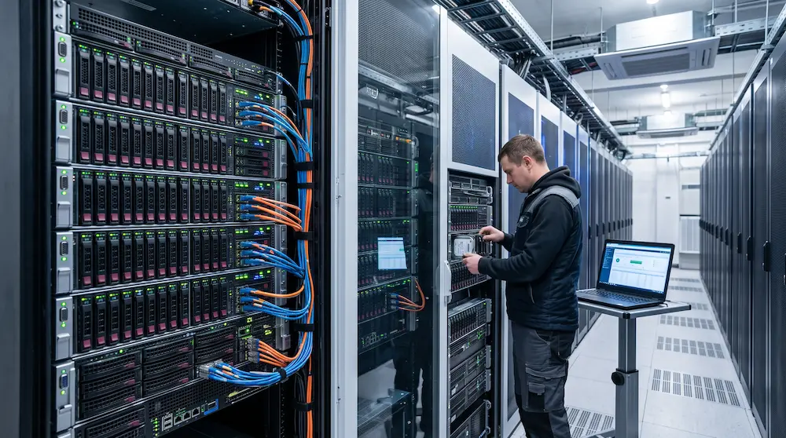
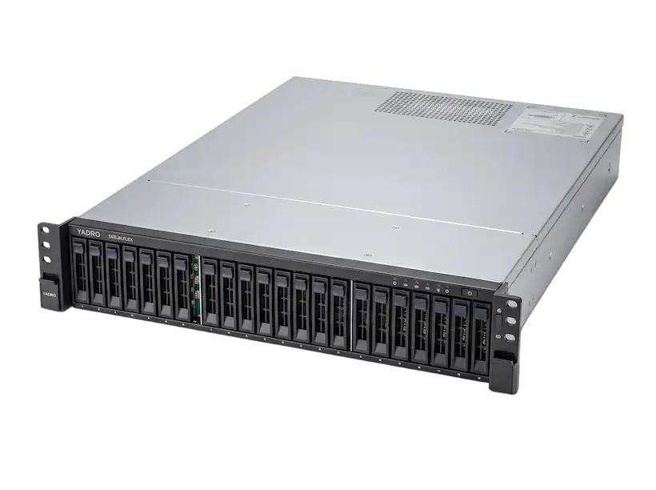
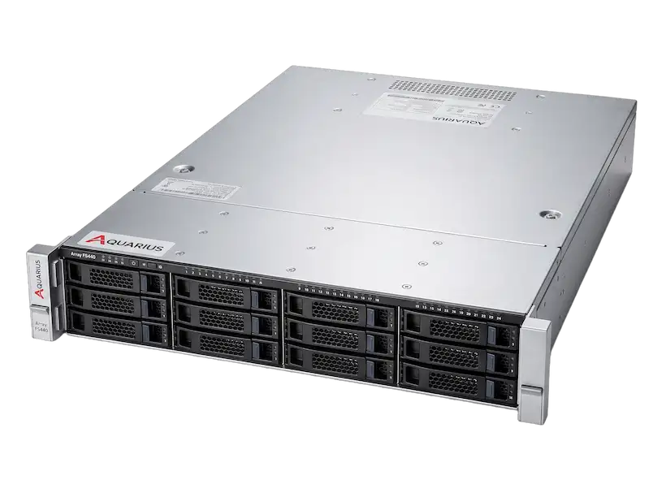
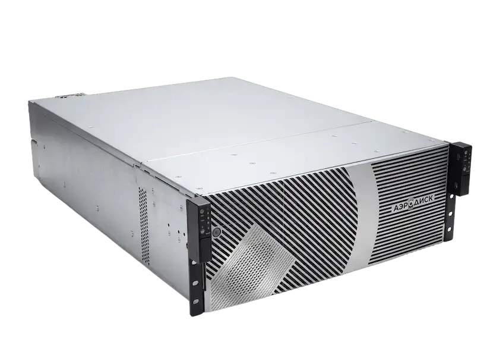
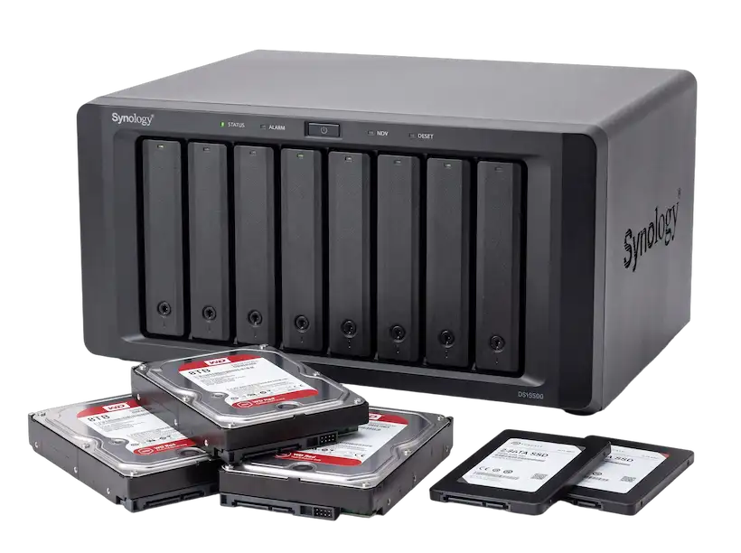
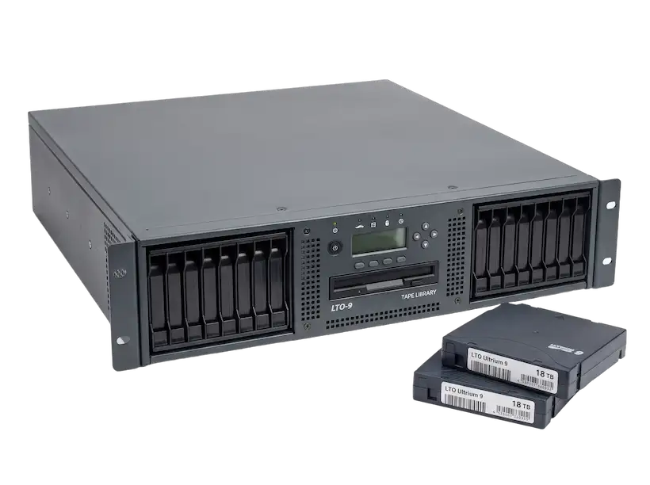
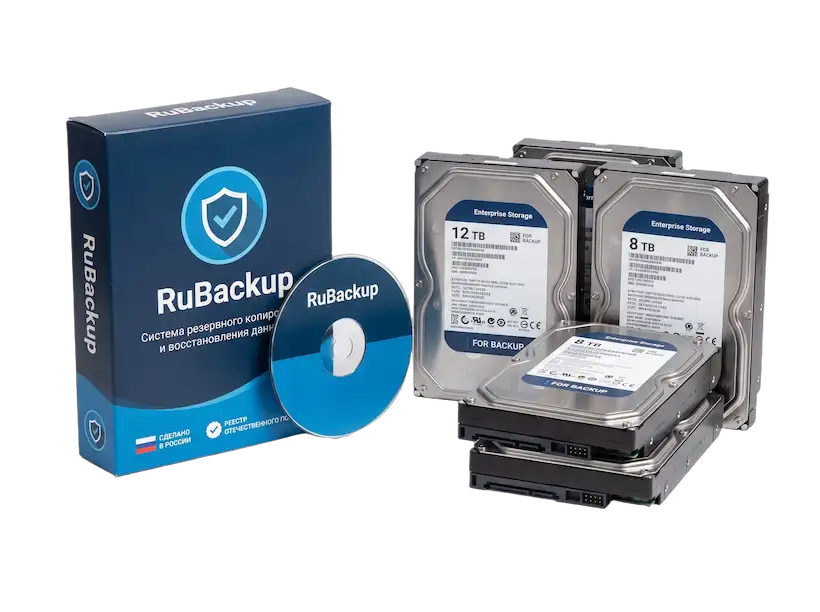

Под вашу нагрузку
Спрашиваем, сколько у вас данных, какая нужна скорость и какие программы вы используете. Предлагаем 2-3 варианта.
Подберём систему хранения под ваш объём данных и нужную скорость. Чтобы базы работали быстро, файлы открывались без задержек и ничего не терялось, даже если выйдет из строя один диск.

Система хранения - это не просто диски в корпусе. Это скорость работы ваших программ и защита от потери данных. Поможем выбрать то, что действительно нужно, без переплаты за лишнее.
Спрашиваем, сколько у вас данных, какая нужна скорость и какие программы вы используете. Предлагаем 2-3 варианта.
Подбираем решения, которые переживают поломку: защита дисков, запасные контроллеры, замена деталей без остановки работы и резервные копии.
Подключим к вашим серверам, перенесём данные и покажем, как пользоваться. Останемся на связи, если понадобится помощь.
Это примеры. Если не нашли нужное, опишите задачу, и мы подберём подходящий вариант. Нажмите «Заказать», и позиция попадёт в вашу заявку на главной странице.

YADRO · система хранения начального уровня

Aquarius · универсальная система хранения

Aerodisk · для небольших компаний

Для небольшого бизнеса

Для долгого хранения

Программа и оборудование вместе
Без сложных слов. Детали пришлём в коммерческом предложении.
| Виды хранилищ | Быстрые хранилища работают только на SSD-дисках. Смешанные сочетают быстрые SSD и ёмкие жёсткие диски, они дешевле. Сетевое хранилище (NAS) - это общая сетевая папка для файлов. |
|---|---|
| Объём | Считаем объём, который останется доступным после защиты данных. Уточняем, сколько данных у вас сейчас и сколько будет через 2-3 года, чтобы хватило с запасом. |
| Скорость | Для баз данных, например 1С, важна скорость при множестве мелких обращений. Для больших файлов важна скорость передачи крупных потоков данных. Диски и ускорение подбираем под вашу задачу. |
| Защита | Защита дисков (RAID) и замена деталей без остановки работы. В системах с двумя контроллерами работа продолжается и при выходе из строя одного из них. Данные не потеряются, даже если сломается один диск. |
| Подключение | Для серверов: оптоволоконное подключение (FC) быстрее, но обычно дороже, подключение по обычной сети (iSCSI) проще. Для общих папок: сетевой доступ (NFS, SMB). Смотрим, что есть у ваших серверов. |
| Резервные копии | Копии каждый день, проверка, что копия целая, и быстрое восстановление. Ленты подходят для хранения данных годами. |
| Документы | Для закупок по 44-ФЗ и 223-ФЗ подбираем оборудование из реестра, передаём сертификаты и помогаем с техническим заданием. |
Напишите, сколько у вас данных и для каких задач. Мы подготовим подбор и пришлём его вам.